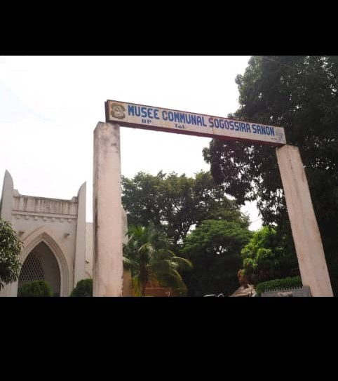

Le Musée Communal de Sogossira SANON
Description et Historique: Situé au coeur de la ville de Bobo-Dioulasso, dans un très beau batiment colonial, l'ancien musée du Houet rebaptiser Sogossira SANON ouvre ses portes en mars 1990. Il presente une petite exposition permanente d'objet des peuples bobos, tels que des masques, des vetements,des bijoux, des poteries ainsi que quelques anciens photo et biens d'autres objets.Deux types d'habitats ont été reconstitué:une maison Bobo et une case Peulh. Ces collections sont oralements enrichies par des expositions temporaires d'artistes locaux,qui sont generalement présents.